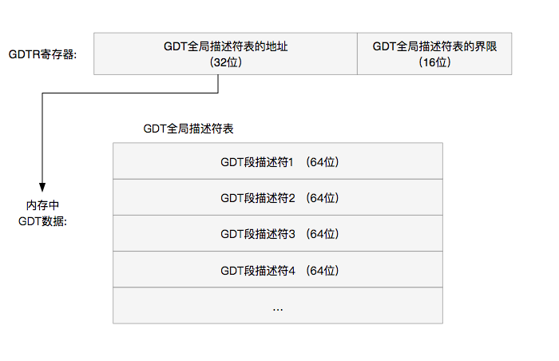
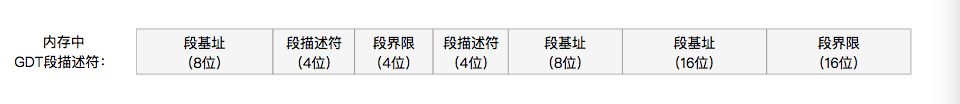

3.3_GDT全局描述符表
文章目录
GDT全局描述符表
什么是GDT全局描述符表
GDT全称为Global Descriptor Table,全局描述符表。
保护模式的寻址方式不在使用寄存器分段的方式直接寻址方式了。而采用的是使用GDT（全局分段描述表）来寻址。从而使用更多的内存地址。
创建GDT全局描述符表使用到一个48位的寄存器：GDTR寄存器。
1）首先，在内存中划分一些内存段，并且每个内存段赋予一个索引。
2）然后，使用lgdt指令，设置GDT的索引和表信息的内存地址到GDTR寄存器。
3）进入保护模式，指令跳转，从实模式分段方式寻址切换到使用GDT分段方式寻址。
- GDT可以被放在内存的任何地方,只要提供内存地址给GDTR寄存器就可以了。
GDT格式
GDT全局描述符表
- 表基地址，表基地址位GDT段表在内存的地址，GDT段表是一个列表，存储了多个 GDT段描述符。
- 表界限：GDT段表的空间信息，以字节为单位。

GDT全局描述符表 = GDT段表基地址 | 16位表界限
GDT段表 = GDT段描述符 ｜ GDT段描述符 ｜ GDT段描述符 …
表界限 = GDT字节数 - 1 （表示 0 - 0x…）
GDT段描述符

GDT段描述符，用来描述在GDT方式在内存中分配的一个段信息，总共8字节64位。
GDT段描述符结构
为了兼容以前的CPU，GDT段描述符的信息被分割成几个部分，格式如下：
GDT段描述符 ＝
段基址 （8位）| 段描述符（4位） | 段界限（4位） | 段描述符（8位） 段基址 （8位）
段基址 （16位） | 段界限（16位）
段描述符定义
- 段基址：规定段的起始地址,长度32位.
- 段界限：规定段的大小,长度20位。段界限可以是以
4KB或者1B为单元大小 - 段属性：确定段的各种性质.长度(12位)
段属性：
- G 粒度位: 段界限的单位大小，G=1表示段界限以
4KB为单元单位，G=0表示段界限以1B为单元单位 - D/B 表示操作数为多少位， 0表示16位操作数，1表示32位操作数
- L ： 0 表示非64位代码段，1表示64位代码段
- AVL ：可用字段，暂时没什么用
- P 段存在位:通常为1，表示段存在于内存中，0则此段为非法的，不能被用来实现地址转换
- DPL 特权级(2位): 用来实现保护机制
- S 为0表示系统段，为1表示非系统段
- type 类型(4位): 用于区别不同类型的描述符。内存段或者门的子类型
type值
| Type位 | 说明 | 取值 | |
|---|---|---|---|
| 代码段时 | |||
| X：3位 | 代码段值为1 | 0：为数据段 1：为代码段 |
|
| C：2位 | 访问位 | 0：为普通段 1：为一致码段 |
|
| R：1位 | 是否可读 | 0：只执行 1：可读 |
|
| A：0位 | 访问位. 该段是否被访问过 | 0 ：未访问 1：已访问 |
|
| 数据段时 | |||
| X：3位 | 数据段值为1 | 0：为数据段 1：为代码段 |
|
| E：2位 | 扩展方向 | 0：向高位扩展 1：向低位扩展 |
|
| W：1位 | 是否可写 | 0：只读 1：可写 |
|
| A：0位 | 访问位 | 0： 未访问 1：已访问 |
段界限:
段界限边界值 = （描述符的段界限值 + 1） × （段界限颗粒读：4Kb 或者 1b） -1
反之： 描述符的段界限值 = （段界限边界值 + 1） /（段界限颗粒读：4Kb 或者 1b）
例如：
16MB的段界限值 = 0x1000000 /（段界限颗粒读：4Kb 或者 1b - 1）= 0x0fff
段选择子
段选择子包括三部分：描述符索引（index）、TI、请求特权级（RPL）
GDTR寄存器
在内存中建立完成GDT信息后，CPU会将GDT的内存地址 和 段界限 数据加载入GDTR寄存器
GDTR寄存器数据(48位)：
GDTR定义数据(48位) ＝ GDT全局描述符表的大小(16位) + GDT全局描述符表的地址(32位)
lgdt指令
lgdt GDTR定义数据
其中GDT全局描述符表数据格式如下
GDT全局描述符表 = GDT段描述符(64位) | GDT段描述符(64位) | GDT段描述符(64位) …
GDT段描述符 = 段基址 （8位）| 段描述符（4位） | 段界限（4位） | 段描述符（8位） | 段基址 （8位） | 段基址 （16位） | 段界限（16位）
其中，第一个GDT段的数据为空。
文章作者 寒冰
上次更新 2019/01/06